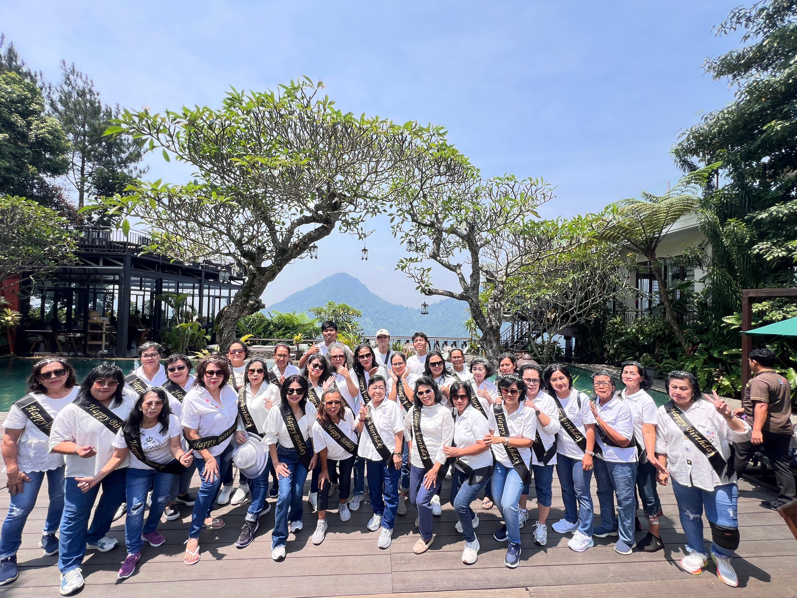
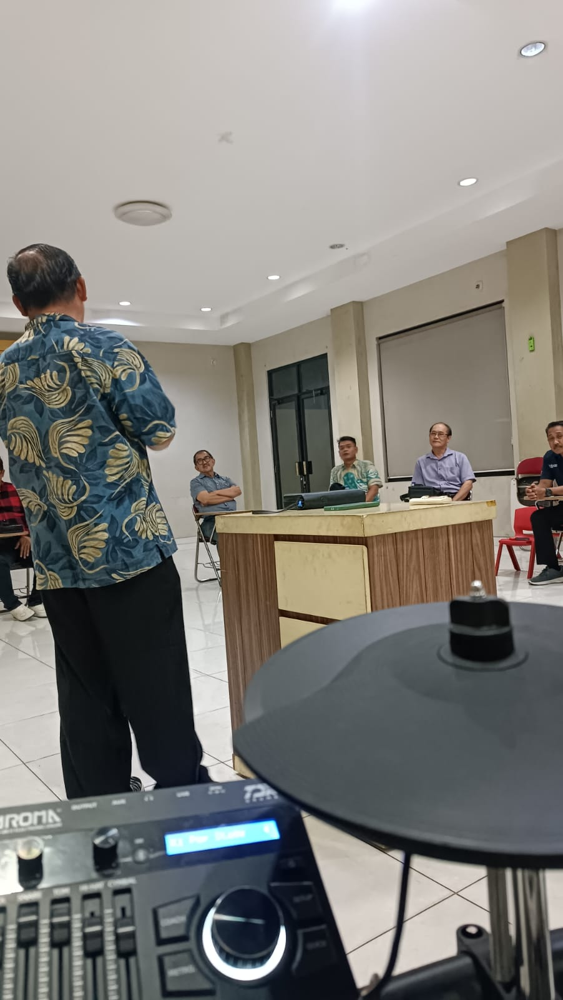
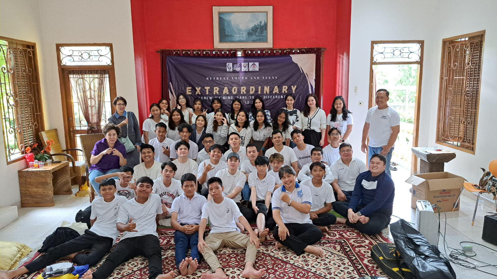
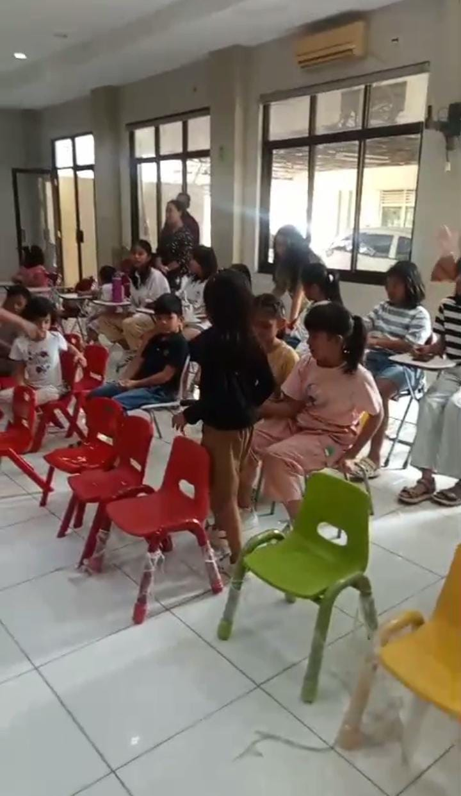

Pelayanan & Komunitas





Didirikan oleh Pdt. Alm. Ong Yusuf Kurnia yang sebelumnya adalah salah satu tua-tua sidang GPdI Ketapang Jl. Zainul Arifin, Jakarta.
Lihat Selengkapnya
We believe that we are family of believers in preparation to be perfect bride of Christ.
Menjadi sebuah keluarga orang percaya yang disiapkan untuk menjadi mempelai Kristus yang sempurna.
| Hari | Waktu | Ibadah |
|---|---|---|
| Minggu | 09:00 WIB | Ibadah Raya |
| Rabu | 18:00 WIB | Ibadah Kaum Ibu |
| Rabu | 19:00 WIB | Ibadah Kaum Bapak |
| Jumat | 18:30 WIB | Ibadah Beston |
| Sabtu | 18:00 WIB | Ibadah Kaum Muda |
Gembala Sidang
Instagram: @gpditanahtinggi
Youtube: @gpditanahtinggi
Alamat: 31, Jl. KH. Agus Salim No.31-32, RT.001/RW.005, Tanah Tinggi, Tangerang, Tangerang City, Banten 15119